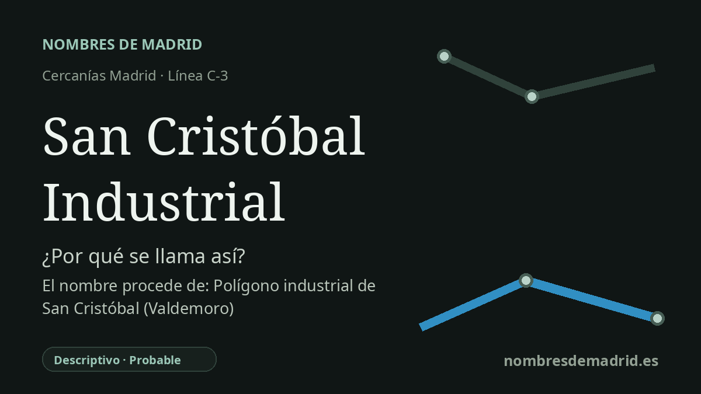

Publicado el · Investigación de Nombres de Madrid · Cómo verificamos cada origen · 10 fuentes consultadas
Respuesta rápida
San Cristóbal Industrial es un nombre ferroviario descriptivo: San Cristóbal lo vincula al entorno cercano de San Cristóbal de los Ángeles, mientras que Industrial señala su ubicación en el paisaje fabril y empresarial de Villaverde. No debe vincularse con Valdemoro.
La historia del nombre
San Cristóbal Industrial se entiende mejor como un nombre ferroviario práctico. La primera parte, San Cristóbal, remite al entorno de San Cristóbal de los Ángeles, en Villaverde; la segunda, Industrial, diferencia este apeadero como el que sirve al lado fabril del distrito, frente al apeadero residencial de San Cristóbal de los Ángeles situado más al norte.
Los datos oficiales de transporte respaldan esa lectura. El CRTM da el acceso en la calle Transversal Sexta, 32, Madrid, y la ficha de estación de Renfe sitúa San Cristóbal Industrial en el Polígono Industrial de Villaverde. Además, la estación está servida por la línea C-3 y por la línea T41 de la EMT, un enlace de carácter laboral asociado al polígono industrial de La Resina.
El nombre San Cristóbal pertenece a una historia urbana de posguerra más amplia. San Cristóbal de los Ángeles se desarrolló como barrio de vivienda protegida en el distrito de Villaverde, y la documentación municipal lo describe como un barrio nacido en los años sesenta con la denominación de poblado dirigido. Las fuentes arquitectónicas sitúan el Poblado Dirigido de San Cristóbal de los Ángeles entre las grandes operaciones madrileñas de vivienda dirigida, con miles de viviendas subvencionadas construidas por fases desde 1959.
La parte Industrial es igual de relevante. Villaverde se convirtió a mediados del siglo XX en uno de los grandes paisajes manufactureros de Madrid, con fábricas y polígonos vinculados a Boetticher y Navarro, Standard Eléctrica, Marconi, Barreiros y la posterior producción automovilística. La antigua fábrica Boetticher, hoy La Nave, recuerda públicamente ese pasado industrial, y la factoría Barreiros de Villaverde llegó a ser uno de los enclaves más conocidos de la industria española del motor.
La corrección principal para la ficha es geográfica: esta estación no debe describirse como llamada por un polígono industrial de San Cristóbal en Valdemoro. La evidencia apunta a Madrid, concretamente a Villaverde, la Colonia Marconi/La Resina y el entorno de San Cristóbal de los Ángeles. Como cautela secundaria, algunas fuentes secundarias indican que la estación se llamó antes San Cristóbal y que pasó a denominarse San Cristóbal Industrial a comienzos de los años noventa, pero no se ha localizado una resolución oficial de denominación ni un anuncio autorizado de apertura.